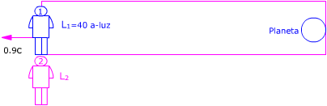
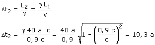

El rectángulo representa un recinto que se mueve respecto al observador 2 (Nave) con velocidad 0.9c. El observador 1, la Tierra y el planeta están dentro del recinto  Observador 1 (Tierra): Observador 2 (Nave) Aplicando la conversión de longitudes: L2 = γ L1 Visto por el pasajero de la nave, el planeta està a una distancia L2 y se acerca a una velocidad 0.9c. Tardará en llegar:  |